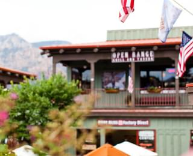
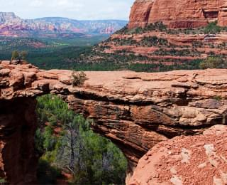

Седона — небольшой городок в Аризоне, заслуживающий большего!
Рассмотрим 5 причин, по которым Седона круче, чем гранд каньон!
Преимущества
Настоящий городок
- №1 -
Седона не аттракцион для туристов, там течет своя жизнь
 Жилье
Рекомендуем пожить в настоящем мотеле, все как в кино!
Сувениры
Не только китайского, но и местного производства!
Еда
Всегда заказывайте Фирменный Бургер, Вы не разочаруетесь!
Там есть мост дьявола
- №2 -
Да, по нему можно пройти! Если вы осмелитесь, конечно
 Небольшая площадь
- №3 -
Все интересные места находятся очень близко
Красивая дорога
- №4 -
Ехать в Седону из лас-вегаса совсем не скучно!
Мало туристов
- №5 -
Большинство едет в гранд каньон и толпится там
Заинтересовались?
Укажите предполагаемые даты поездки, и мы покажем вам лучшие предложения гостиниц в Седоне
Найти гостиницу